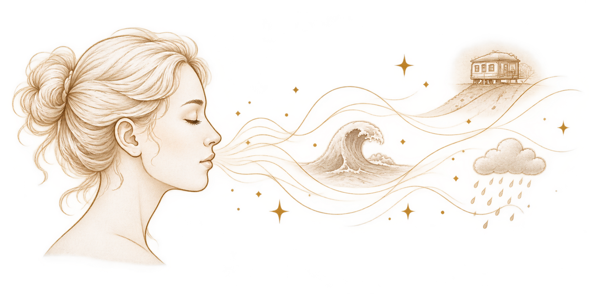
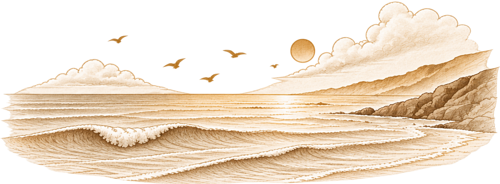

Приложите ракушку к уху.
Даже если до ближайшего моря — сотни или тысячи километров, в ней почти наверняка зашумит что-то похожее на волны.
Мы знаем этот звук с детства. И, возможно, хотя бы раз задумывались: почему в ракушке слышно море?
Ответ немного разрушает красивую легенду. Но, как ни странно, делает её интереснее.
Что мы на самом деле слышим в ракушке?
Моря внутри ракушки нет.
Ракушка не хранит звук волн, который когда-то в неё попал. Чтобы появился знакомый шум, ей нужен звук, который существует здесь и сейчас.
Вокруг нас редко бывает абсолютная тишина. Воздух движется, что-то гудит за стеной, шелестит одежда, работает техника. Большую часть этого фона мы можем почти не замечать.
Когда мы прикладываем ракушку к уху, её полость меняет окружающий звук: одни частоты становятся заметнее, другие — слабее. В результате привычный фон превращается в характерный гул и шуршание. Похожий эффект можно услышать и в других полых предметах подходящей формы.
Поэтому ракушка не столько хранит море, сколько по-своему отвечает на звуки окружающего мира.
И в этом есть что-то неожиданно красивое.
Если вокруг станет совершенно тихо, ракушке почти нечего будет менять.

Почему этот звук кажется нам морем?
Физика объясняет, почему ракушка шумит.
Но остаётся другой вопрос: почему среди всех возможных ассоциаций мы слышим именно море?
Возможно, дело не только в самом звуке.
Мы уже знаем, что держим в руках ракушку. Мы видели море. Слышали волны. И этот опыт может участвовать в том, как мы понимаем то, что слышим.
Современные исследования восприятия показывают, что распознавание звуков зависит не только от самого акустического сигнала. На него могут влиять контекст, внимание, предыдущий опыт и ожидания. Иными словами, восприятие звука — это не простая запись того, что произошло у нашего уха.
Это не значит, что мы обманываем себя.
Скорее, звук сам по себе ещё не всегда имеет готовое значение.
Мы слышим шорох — а потом узнаём в нём дождь.
Слышим гул — и думаем о поезде.
Слышим изменённый ракушкой фон — и вспоминаем море.
Контекст вообще играет важную роль в том, как человек воспринимает звуковую среду: один и тот же звук может восприниматься по-разному в зависимости от места, ситуации, прошлого опыта и ожиданий.
И тогда хочется задать себе простой вопрос:
Возможно. А возможно, услышите что-то совершенно другое.
Почему шум моря многим кажется приятным?
Наверное, поэтому шум моря так часто используют в музыке для отдыха, приложениях для сна и пространствах, где хочется создать спокойную атмосферу.
Но здесь важно не превращать приятное ощущение в универсальное правило.
Исследования действительно показывают, что природные звуковые среды могут быть связаны с ощущением восстановления и более благоприятным субъективным состоянием. Однако влияние звука зависит от множества условий — самого человека, ситуации, контекста и того, какой именно звук он слышит.
Наука пока не знает одного звука, который одинаково успокаивал бы всех.
Для одного человека шум волн — это отпуск и простор.
Для другого — холодный ветер, бессонная ночь или просто слишком громкий фон.
И, возможно, в этом нет ничего странного.
Мы не слышим звуки в пустоте. Каждый из них встречается с нашей памятью.
Один и тот же звук может быть просто шумом.
А может стать морем, воспоминанием, отдыхом или чем-то совершенно другим.
Потому что между звуком и нашим ощущением всегда есть ещё мы сами.
Мы слышим не только звук
Когда-то ракушка стала для людей маленьким символом моря.
Но моря внутри неё нет.
Есть форма. Есть воздух. Есть звуки, которые существуют вокруг нас прямо сейчас.
И есть человек, который прикладывает ракушку к уху и узнаёт в этом шуме что-то знакомое.
Возможно, поэтому звук моря в ракушке так трудно окончательно объяснить одной только физикой.
Физика может рассказать, откуда берётся звук.
Но она не может заранее сказать, что именно мы в нём услышим.
Ведь иногда между звуком и нашим ощущением оказывается целая жизнь.

Научная основа
Рабочий список источников для редакционной проверки: материалы по акустике ракушек; исследования восприятия звука и роли контекста; систематические обзоры о влиянии природных звуков на субъективное состояние и восстановление. Перед публикацией источники будут оформлены единообразно и привязаны к соответствующим утверждениям.